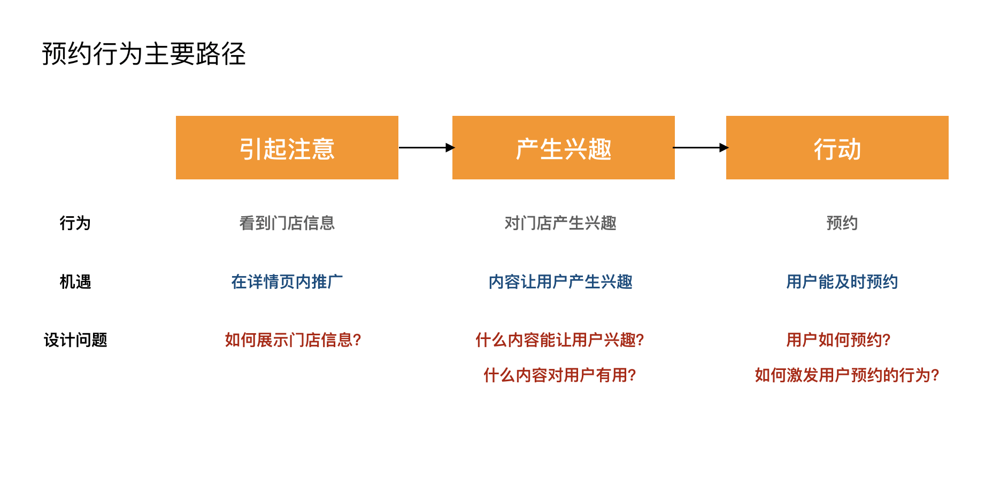
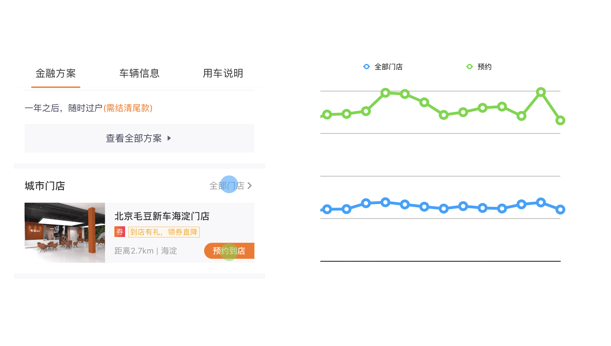

毛豆 App 到店预约
毛豆新车网开始布局线下门店。我们在移动端设计了门店预约功能。客户可以选择所在位置附近的门店以及预约到店时间。
项目时间：2018年4月

策略层设计
商业目标
实现预约业务的主要商业目标是
- 提升客户对门店的感知
- 吸引更多的客户拜访门店
- 获取客户线索
设计目标
通过分析商业目标和用户的行为路径，我们确定了设计策略，以在不伤害用户体验的同时，帮助公司达到商业目的。
方案
我们在车辆详情页中加入门店信息，使访问者感知门店的存在，同时激励用户预约门店拜访。
详情页那么长，信息放在哪里？我们需要考虑用户流程行为。

我们需要给予访问者需要的信息，降低访问者的决策成本
有兴趣预约的人，最需要以下 2 方面的信息
- 门店在哪里？
- 门店距离自己有多远？
我们同时向访问者展示门店的图片，以吸引他们拜访门店。
系统层设计
约规
在设计方案时，我们还需要了解技术/业务规则的限制，以实现最终的设计。
一些帮助我们收敛设计方案的约规包括：
- 用户的手机号码为身份标识
- 一名用户不能同时有 2 个正在进行的购车流程
- 一名客户不能同时有 1 个以上的未到店预约
预约
我们分析业务流程，并确定客户在 app 上完成任务所需要经历的流程。
用户预约主要流程

预约主要页面

工单管理
我们建立了“预约工单” 的概念模型。客户通过预约建立工单，工单的状态会根据不同条件变化。

后续评估
功能上线后，我们需要进行数据的检测，已了解用户行为和功能对业务产生的影响。
我们发现点击预约的次数远大于点击门店的次数。这可能表示访问者对门店很感兴趣，即使他们并不想马上预约。
